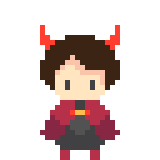

Hell Gene
Game Design/Development Project
Role: Gameplay Designer, Programmer, Animator, UI Designer, VFXCollaborators:
- Jonathan Newman - Lead Sound Designer, Programmer
- Alyssa Marie Umbal - Lead Artist
- Benedict Wong - Gameplay Designer, Programmer
- Nathan Cerone - Project Manager, Level Designer, Programmer
- Stratos Argentius - Gameplay Designer, Artist, Animator
Tools Used:
- Unity (Development)
- C# (Development)
Project Description
Hell Gene is a roguelike hack and slash game created for Brackey's Game Jam 2021.2, with the main theme being "Let There Be Chaos".In Hell Gene, you play as Eugene Martez, a descendant of the Demon King on a quest to reject his heritage. In the process, he takes up different weapons to try and escape through the ever-changing rooms of Hell.
Featuring procedurally generated level generation and a combat system with a large variety of weapons, Hell Gene was a great technical learning experience.
Gameplay Design Process
In designing gameplay, the team first broke down the term "chaos" and how we could present the feeling of chaos to a player. From there, we decided to focus on irregularity as a core gameplay element, which led to the decision to include procedural generation.In addition, we opted to visually clutter the screen in order to present a lack of order to the player. In interpreting the phrase "let there be", we also decided to give the player control over the chaos by allowing them to choose between more power or an easier stage.
VFX, Animation and UI
Adhering to the theme of chaos, many of my animations were made to be big and fast, in order to occupy the screen with movement. Particles were also used heavily in order to further display a lack of order and take up screen space, further conveying the chaotic feel of the game.In light of the visual direction of the game, the main focus in designing the UI was to convey the most important information to the player as effectively as possible due the constant movement elsewhere in the game.
I ended up deciding on Health, Chaos Level, Equipped Weapons and Weapon Durability as the most important to convey due to these variables' high impact on gameplay.


Front-facing attack animation. The most challenging part of this animation was getting the motion of the cape right.


Development
During development, I was in charge of programming the procedural generation system for levels, ranged weapon and projectile behaviours, as well as parts of item spawning.One main challenge of the development of Hell Gene was the breadth of tasks I undertook in addition to the above programming, however I believe that proper time management and clear directives allowed me to accomplish a large variety of tasks during the game jam.
Takeaways
Through this project, I was able to learn a lot of technical skills in Unity, from procedural generation to particle systems. One of the bigger challenges, however, was trying to take on too many different roles at once during the course of this project, which I feel may have led to quite a few rushed areas. Despite that, we managed to finish in the top third of a game jam with over 1700 entries.I want to not only continue working on the skills I've developed over the course of the game jam, but to take the lessons learned and apply them to my work moving forward.
Project Links